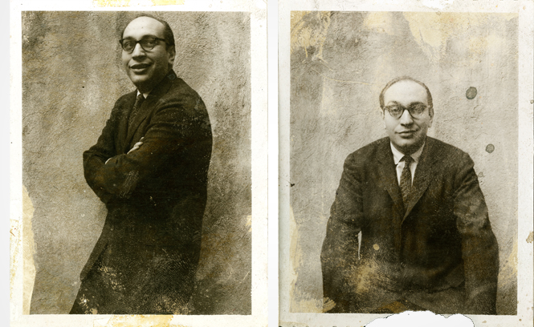
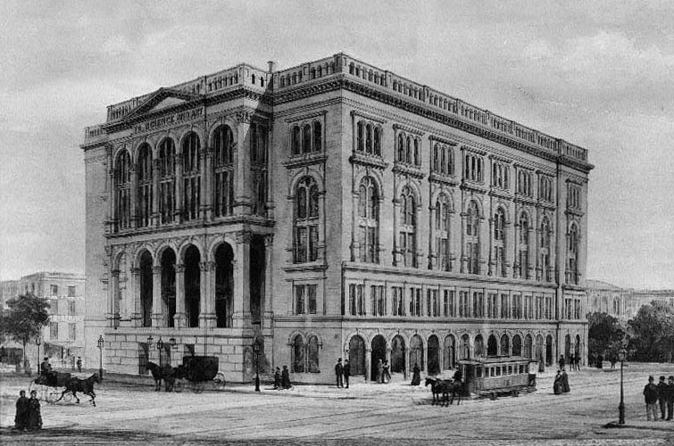
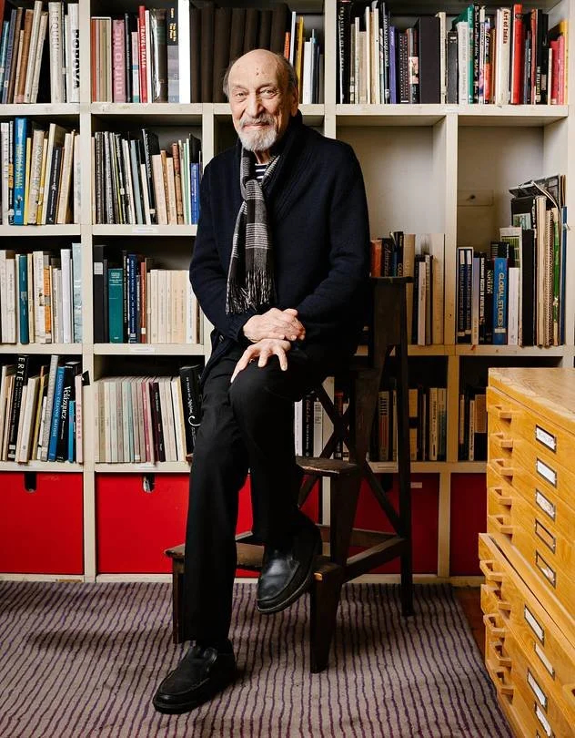

Milton Glaser was born in 1929 in the
Bronx in New York City to Jewish-
Hungarian
immigrant parents. He was
raised in a left-wing, politically active
community of Eastern
European
refugees. His father discouraged his
dreams of becoming an artist, but his
mother encouraged it.
He failed at
making comic strips, so he turned to
painting, poster design, and typography.

He studied at the Cooper Union
Art School in New York, and he
went on to complete
his
postgraduate studies at the
Academy of Fine Arts in
Bologna, Italy, where he met
his mentor,
Giorgio Morandi.

He was a very prominent figure
in the world of graphic design
from the mid 1950s
through the
late 1970s and beyond that until
his death in 2020. His work
continues to be an
inspiration
for many graphic designers
even to this day.
